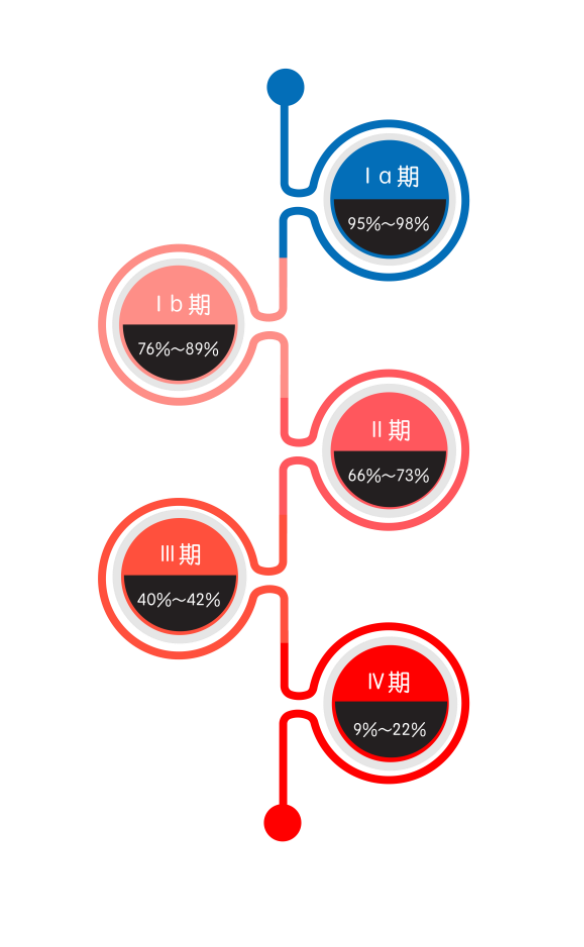

没想到，宫颈癌还有这么多面孔呢！
都说时间是把杀猪刀，历经不同的生长阶段，逆生长的不多，“放飞自我”的倒不少。曾经白衣翩翩的英俊少年如今变成胡子拉碴的邋遢大叔；曾经豆蔻年华的天真少女如今变成了只知柴米油盐的黄脸婆……可你知道吗？宫颈癌也有自己不同的“成长”阶段的！时间这把刀，在宫颈癌身上又留下了怎样的印记？宫颈癌又是如何放飞自我、有着哪些不一样的面孔呢？跟我一起来看看吧！
通常情况下，病人在经过病理检查、被诊断为宫颈癌后，医生会通过各种检查——妇科检查、影像学检查（X线、B超）或内镜检查等来了解肿瘤影响的范围，确定宫颈癌成长到了哪个阶段，以此来为患者提供最佳的治疗方法并评估治愈的几率。
不同阶段的宫颈癌长得也不一样哦，通常，医生所使用的宫颈癌分期为国际妇产科联盟（FIGO）分期，将其分为了4期：
- Ⅰ期 ：肿瘤局限在宫颈，根据肿瘤的大小及侵犯深度又分为 Ⅰ a期和 Ⅰ b期；
- Ⅱ期 ：肿瘤超出宫颈，侵犯到阴道上段或宫颈旁的组织，但未达到盆壁；
- Ⅲ期 ：肿瘤侵犯到阴道下段或沿宫颈旁组织蔓延到达盆壁；
- Ⅳ期 ：肿瘤侵犯到膀胱 、直肠等周围器官的黏膜，或转移到肺、肝等远处的器官。
也就是说，当宫颈癌越来越“放飞自我”的时候，它侵犯的器官就会越来越多。当一个人患了宫颈癌以后，她的生存期长短与宫颈癌所处的分期阶段也有着密切的关系。一般而言，分期的数字越小，生存期越长；分期的数字越大，生存期越短。这可不是随便说说的哦，有数据有真相！
据FIGO报道，宫颈癌的临床分期不同，患者的5年生存率也不同。

看完了宫颈癌的不同面孔，姑娘们有没有感到来自宫颈癌深深的恶意……所以呀，一定要提前做好预防工作，千万不能给宫颈癌“放飞自我”的机会哦~
Ref:
1. 刘继红 主编。远离宫颈癌。北京：人民卫生出版社，2008
2. Quinn MA, Benedet JL, Odicino F, et al. Carcinoma of the cervix uteri. FIGO 26th Annual Report on the Results of Treatment in Gynecological Cancer. Int J Gynaecol Obstet. 2006 Nov;95 Suppl 1:S43-103.